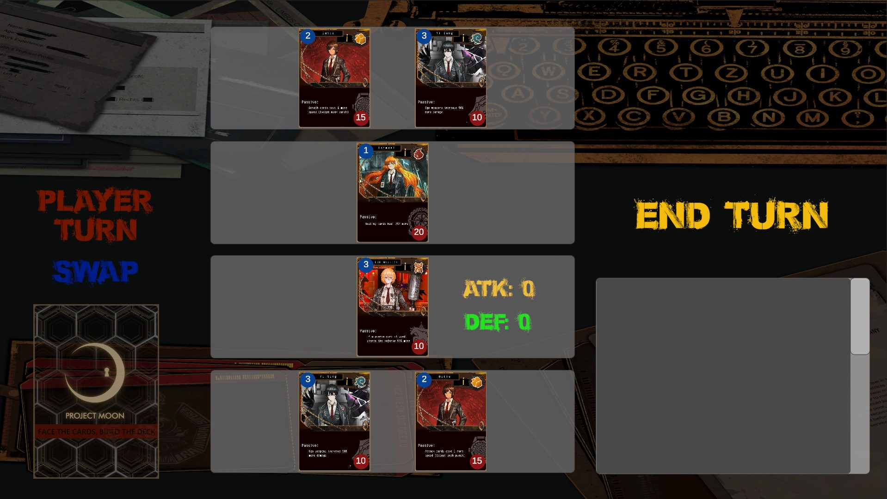
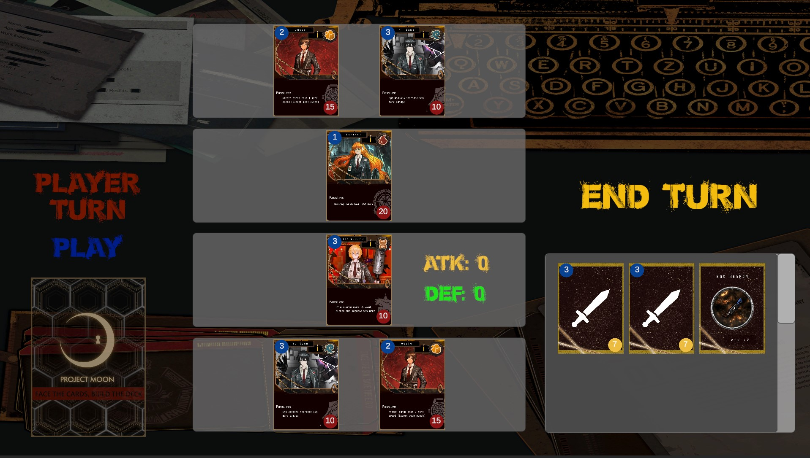
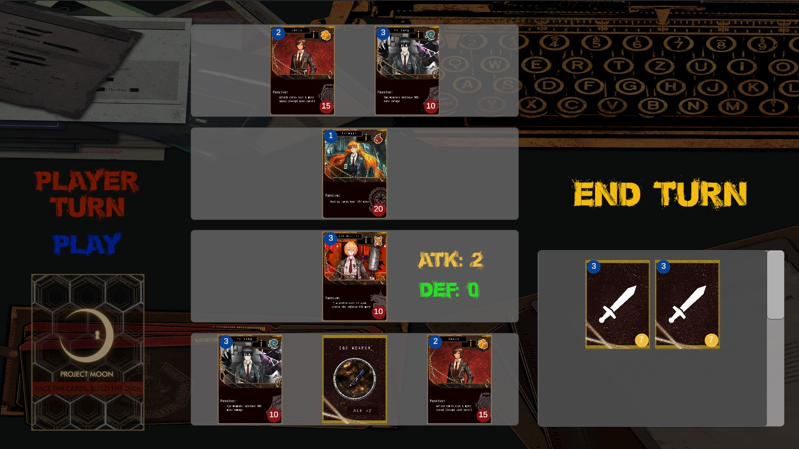
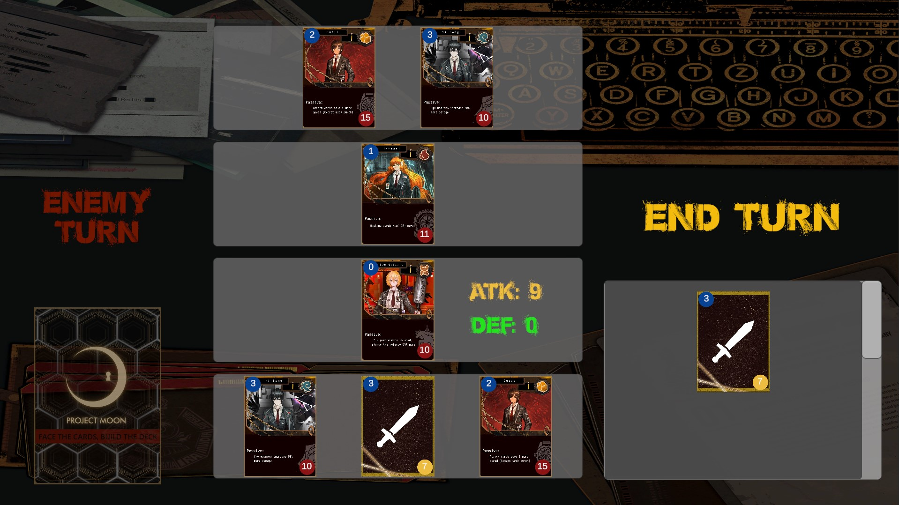
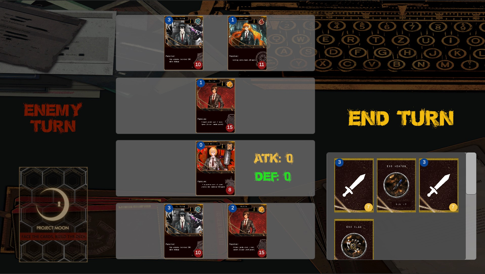

Match Gameplay
Game Start:
Identity cards are placed on the board.

Player Turn:
Player is given the option to swap the front card for one of the two back cards or leave the front card in combat. An effect of swapping cards is regenerating the card's original speed value. If a card that had 3 speed and used 2 goes back to having 3 speed when swapping. This is intended to help avoid defense card spamming.
If the player swaps the card the card placement changes, if not, it stays the same. The player then draws 3 cards. In this case, two attack cards and one attack boost card from the deck.

The player can use 1 action card (atk, def) per turn and as many item cards as the conditions allow in the card description. In this case, the attack card is played, reducing the front card's speed by 1.

The card performs the action (attack) and the action card gets discarded. The opposing card loses 3 HP.

Player turn ends, opponent's turn starts. The opponent uses the same gameloop as the player.
